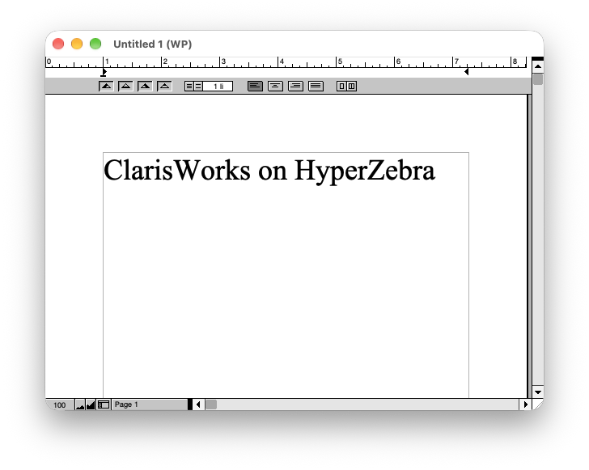

クラシックMacアプリ
ClarisWorks クラリスワークス

動作確認情報
- 確認日
- 2026/11/06
- HyperZebraのバージョン
- 3.0.1
- 実行したOS（ホストOS）
- macOS 27
手元のクラシックMacアプリを開くには
HyperZebraは、無料で使用することができます。macOS・Windows・Linuxに対応しています。クラシックMacのROMやOSの用意は不要です。
- HyperZebraをダウンロードして展開します。
- クラシックMacアプリのファイルを用意します。
- HyperZebraを起動し、ランチャーへファイルをドロップします。アーカイブやディスクイメージにも対応しています。